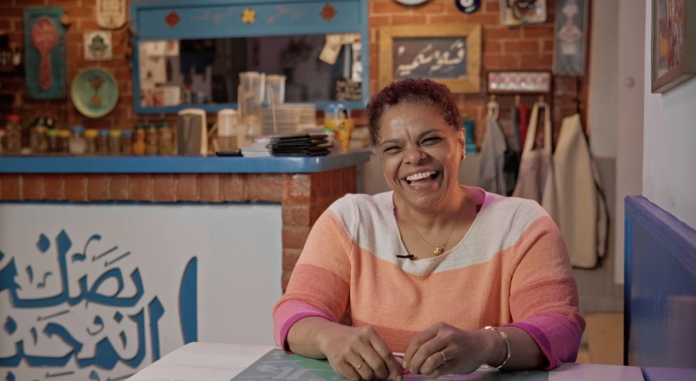

Documentary filmography
Sweet & Salty


- Co-directed by
- Amira Abdel-Fadil & Sarah El Halawany
- Production
- Nazra Films, Goethe Institute, IMS, Red Star
Synopsis
From the heart of Cairo, Nabil and Somaya are strangers pursuing dreams rooted in their love of food. Though their paths are different, their stories echo one another. Each navigates the delicate space between ambition and circumstance, shaped by memory, sacrifice, and the people who surround them.
Film stills